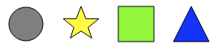
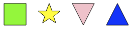
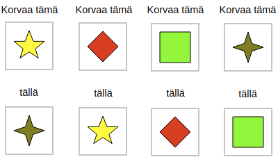

Etsi ja korvaa
Tee nykyisestä kuviojonosta samanlainen kuin tavoitteesta korvaamalla kuvioita.
Voit korvata kuvion toisella kuviolla valitsemalla kaksi kuviota harmaista kuvionapeista.
Jos jäät jumiin, voit peruuttaa askeleita.
Valitse alta kaksi kuviota:
Ratkaisu
Eräs ratkaisu on:
Nämä korvaukset muodostavat tavoitteen askeleittain seuraavasti:


Korvataan aluksi neliö kärkikolmiolla, ja sen jälkeen ympyrä neliöllä:
Näiden korvausten tuottamat muutokset:


Tämän jälkeen täytyy vielä saada korvattua tähti kolmiolla ja kolmio tähdellä:

Tämä saadaan aikaiseksi kolmella korvauksella käyttämällä jotain nykytilanteesta puuttuvaa kuviota väliaikaisena apukuviona (alla käytetään salmiakkia):
Alla on esitetty näiden korvausten tuottamat muutokset. Ratkaisu on nyt valmis.


Aloitetaan tarkastelu tähdestä. Se pitää korvata neliöllä. Toisaalta neliö pitää korvata salmiakilla ja salmiakki tähdellä.

Nämä muutokset saadaan aikaan käyttämällä jotain alkutilanteesta puuttuvaa kuviota väliaikaisena apukuviona. Ainoa tällainen on risti. Alla on esitetty eräs tapa tehdä sopivat korvaukset:
Edellisten korvausten jälkeen ollaan tilanteessa:

Alla on vertailun vuoksi tavoite:

Meidän pitää vielä korvata kolmio kärkikolmiolla, ympyrä kolmiolla ja kärkikolmio ympyrällä. Tässä tulee jälleen käyttää jotain nykytilanteesta puuttuvaa kuviota väliaikaisena apukuviona. Voimme käyttää taas ristiä. Alla one esitetty eräs tapa. Näiden korvausten jälkeen ratkaisu on valmis.
Tämä on tietojenkäsittelyä!
Esimerkiksi monet tekstinkäsittelyohjelmat sisältävät "etsi ja korvaa"-toiminnon, jolla kaikki antamamme hakumerkkijonon esiintymät dokumentissa voi korvata antamallamme korvausmerkkijonolla. Tehtävässä käytettiin samantapaista toimintoa, joskin etsittiin ja korvattiin merkkijonojen sijaan kuvioita ja pääpaino oli sen pohtimisessa, miten korvaukset muuttavat lähtöasetelmaa.